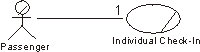

|
Business actors interact with the business by sending and receiving messages. Both parties can take the initiative to
interact.
To fully understand the role of a business actor, you must know in which processes the actor is involved. This is shown
in by the communicate-association between the business actor and the business use case representing the process. The
communicate-association indicates the existence of an interaction.
The multiplicity of the association shows how many instances of a business use case one instance of a business actor
can interact with at the same time; conversely, it shows how many instances of a business actor one instance of a
business use case can interact with.
Example:
When an instance of the business actor Passenger approaches the check-in counter and hands over his ticket and baggage,
he sends a message to an instance of the use case Individual Check-in. At the end of the check-in procedure, the
business use case will print out and hand over a boarding pass, and one or more customer claim checks to the passenger.
The Passenger can only communicate with one instance of Individual Check-in. Thus, the multiplicity of the relationship
is [1].

A Passenger who wants to check-in at the airport will interact with the use case Individual Check-in.
When an actor and a use case interact, it can be done using different media. For example, telephone, fax, mail, and
e-mail. One or several messages can be sent, but there is only one communicate-association between the two.
|